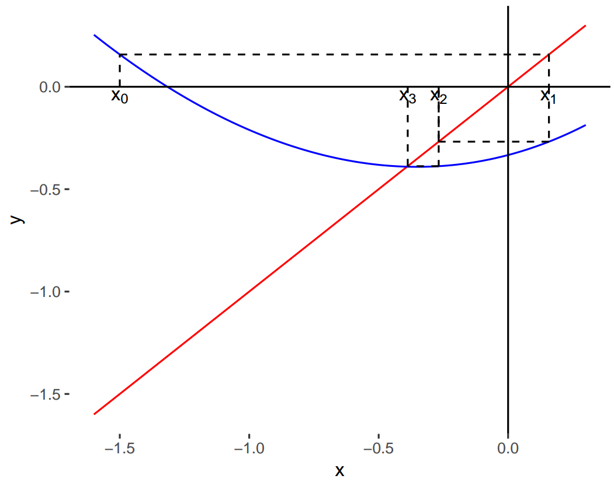
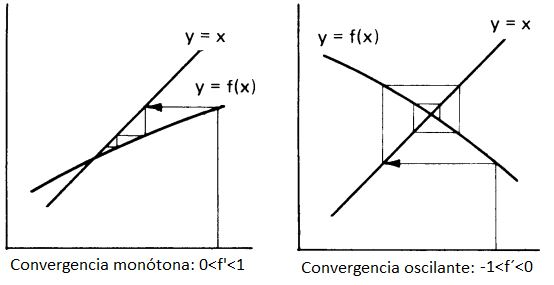

3 Método de las Aproximaciones Sucesivas o del Punto Fijo
3.1 Punto fijo
Definición de Punto Fijo
- Un punto fijo de una función \(f(x)\) es un número real \(P\) tal que \(f(P)=P\).
Ejemplos:
- \(f(x)=x^{2}-3x+4\), \(2\) es un punto fijo de \(f\) porque \(f(2) = 2\).
- \(f(x)=x^{2}\), \(0\) y \(1\) son puntos fijos de \(f\) porque \(f(0) = 0\) y \(f(1) = 1\).
¿Cómo encontrar un punto fijo de \(f(x)\)?
Sea \(f\) una función continua y \(p_0, p_1, \dots, p_n, \dots\) una sucesión generada a partir de \(p_{n} = f(p_{n-1})\) con un valor inicial \(p_0\), es decir:
\[\begin{gather*} p_0 \\ p_1 = f(p_0) \\ p_2 = f(p_1) \\ \vdots \\ p_n = f(p_{n-1}) \\ \vdots \\ \end{gather*}\]
Si \(lim_{n\to\infty} p_n = P\), entonces \(P\) es un punto fijo de \(f(x)\).
3.2 Empleo para la resolución de ecuaciones
Siendo:
\[\begin{equation} \label{eq:a} F(x) = 0 \end{equation}\]
la ecuación a resolver, el Método de las Aproximaciones Sucesivas propone reescribirla a través de la ecuación equivalente:
\[ f(x) = x \]
de manera que la tarea de hallar un valor de \(x\) que satisface es lo mismo que hallar un punto fijo de la función \(f(x)\).
Entonces, el método para resolver \(F(x) = 0\) consiste en:
- Expresar la ecuación en la forma \(x = f(x)\).
- Elegir un valor inicial adecuado \(x_0\).
- Realizar el siguiente cálculo iterativo:
\[\begin{gather*} x_1 = f(x_0) \\ x_2 = f(x_1) \\ \vdots \\ x_n = f(x_{n-1}) \\ \vdots \\ \end{gather*}\]
- Si a medida que \(n\) crece los \(x_n\) se aproximan a un valor fijo, se dice que el método converge y la iteración se detiene cuando la diferencia entre dos valores consecutivos \(x_{n-1}\) y \(x_n\) sea tan pequeña como se desee.
- El valor \(x_n\) será una raíz aproximada de \(F(x)\).
3.3 Ejemplo
- Hallar las raíces de la ecuación no lineal: \(F(x) = x^2-3x+e^x-2=0\)
- Graficamos y vemos que las raíces están cercanas a -0.4 y 1.4.

- Reescribimos \(F(x) = 0\) como \(f(x) = x\)
- Por ejemplo:
\[F(x) = x^2-3x+e^x-2 = 0\] \[\implies \underbrace{\frac{x^2+e^x-2}{3}}_{f(x)} = x \] \[\implies f(x)= \frac{x^2+e^x-2}{3}\]
- Para \(x_0 = -1.5\), el proceso converge al valor -0.390271 que consideraremos como la aproximación para la raíz buscada.

3.4 Criterios para detener el proceso iterativo
- Criterios para convergencia:
Error absoluto: \(|x_{j+1}-x_j| < \epsilon\)
Error relativo: \(\left|\frac{x_{j+1}-x_j}{x_j}\right| < \epsilon\)
Error relativo respecto al valor inicial: \(\left|\frac{x_{j+1}-x_j}{x_0}\right| < \epsilon\)
\(|F(x_j)| < \epsilon\)
- Criterios para divergencia:
\(j > r\), \(r\) número máximo de iteraciones
\(|x_j - x_1| > k\)
\(|F(x_j)| > k\)
\(|x_{j+1}-x_j| > k\)
\(\left|\frac{x_{j}}{x_1}\right| > k\)
3.5 Ejemplo
- En cada paso calculamos el error relativo y nos detuvimos cuando el mismo fue menor a 1E-6.

3.6 Teorema del Punto Fijo
- Pero esto no funciona siempre, para cualquier \(f\) o cualquier \(x_0\)…
- ¿Cuándo sí? Cuando se cumplen las condiciones del Teorema del Punto Fijo.
- A saber:
Dadas las siguientes condiciones:
Si \(x_0\) es cualquier número en \([a, b]\), entonces la sucesión definida por \[ x_n = f(x_{n-1}), \quad n \ge 1,\]
converge al único punto fijo que \(f\) posee en \([a, b]\).
3.7 Ejemplo
- En el ejemplo anterior, dada la ecuación \(F(x) = x^2-3x+e^x-2=0\), la reexpresamos como:
\[x = \frac{x^2+e^x-2}{3} \implies f(x)= \frac{x^2+e^x-2}{3}\]
\[\implies f'(x) = \frac{1}{3}(2x+e^x)\]
- Verificar condiciones del Teorema.
- Si no se cumplen las condiciones, podemos probar con otra expresión para \(f(x)\).
3.8 Interpretación gráfica
- Dado que el método plantea encontrar el valor de \(x\) que satisface \(x = f(x)\), resolver la ecuación original es equivalente a resolver el sistema:
\[\begin{equation} \begin{cases} y = f(x) \\ y = x \end{cases} \end{equation}\]
- Es decir, que geométricamente el valor buscado es el punto de intersección de la curva \(y=f(x)\) con la recta \(y=x\).
3.9 Ejemplo
- Para \(x_0 = -1.5\), el proceso converge en 7 iteraciones a la raíz -0.390271 con un error relativo menor a -1E+6.

3.10 Algunos diagramas
Ejemplos de convergencia:

Ejemplos de divergencia: